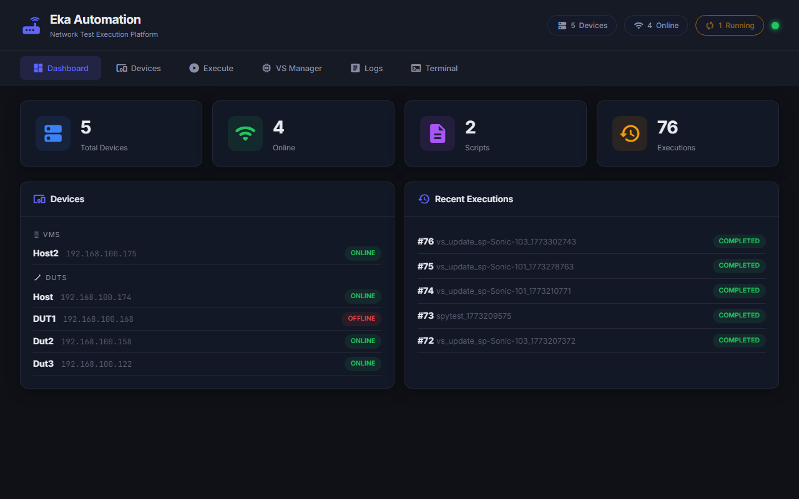
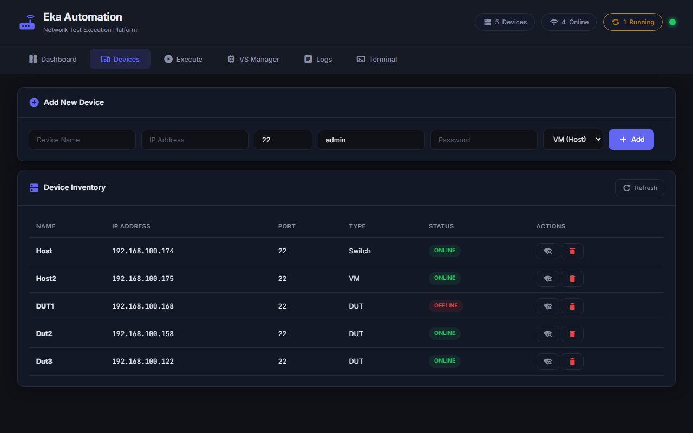
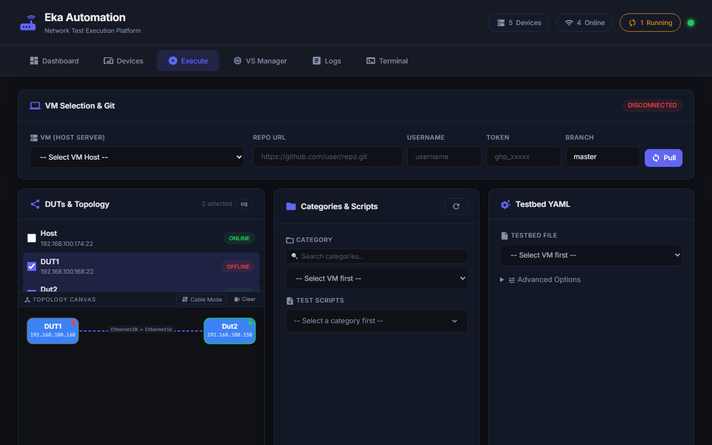
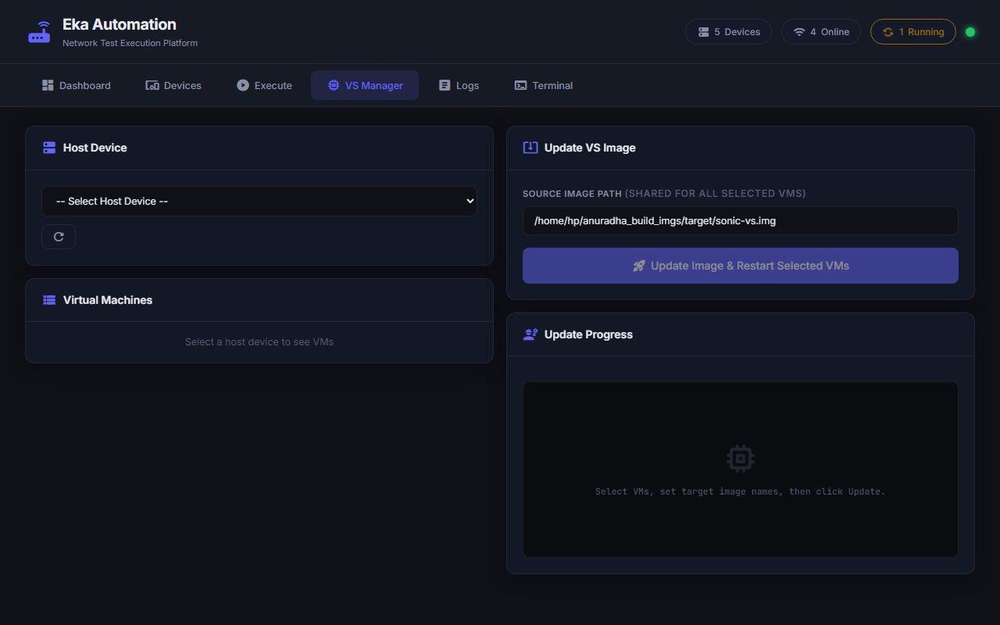
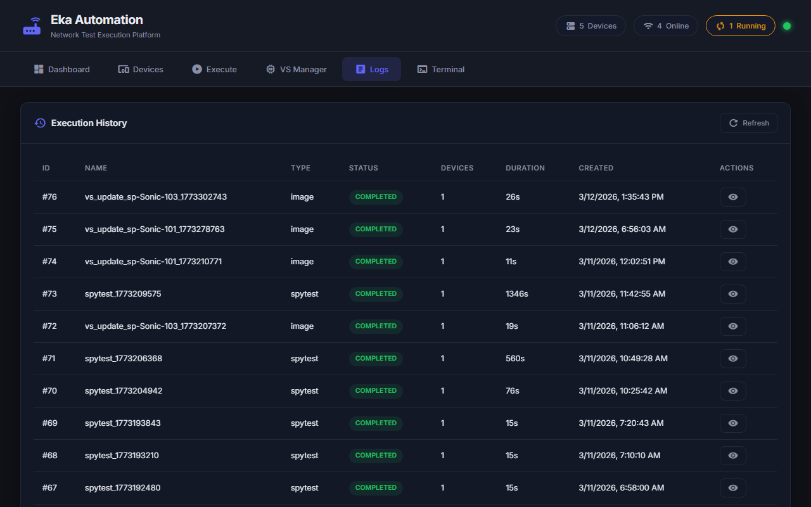
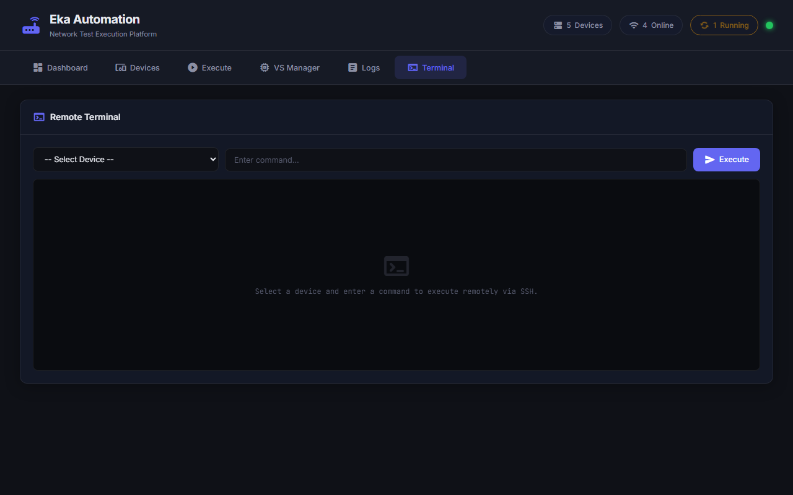

EKA AUTOMATION PLATFORM
Enterprise-Grade One-Click Network Testbeds & Simulation Control Plane
System Operations & Architecture Review
Download PowerPoint (.pptx)Presentation Agenda

Problem Statement: Laboratory Friction
Solution: Unified Control Plane
Modular System Architecture
EKA CONTROL PLANE ORCHESTRATOR
DASHBOARD
Real-time stats visualizer.
DEVICES
Switch and VM register list.
EXECUTION
Interactive topology canvas.
VS MANAGER
Hypervisor VM coordinator.
AUDIT LOGS
Trace files repository database.
SSH TERMINAL
Web browser SSH sessions.
HARDWARE LOAD
Physical switch firmware installer.
Eka Core Feature Highlights
Workflow & Automation Pipeline
Platform Benefits: Dev & QA Teams
Scalability & Performance Metrics
1. Dashboard Tab
2. Devices Tab

3. Execution Tab

4. VS Manager Tab

5. Logs Tab

6. Terminal Tab

7. Hardware Load Tab

Conclusion & Future Roadmap
THANK YOU.
Innovative Test Automation Orchestration
Press ESC to see slide overview. Use arrow keys to navigate.